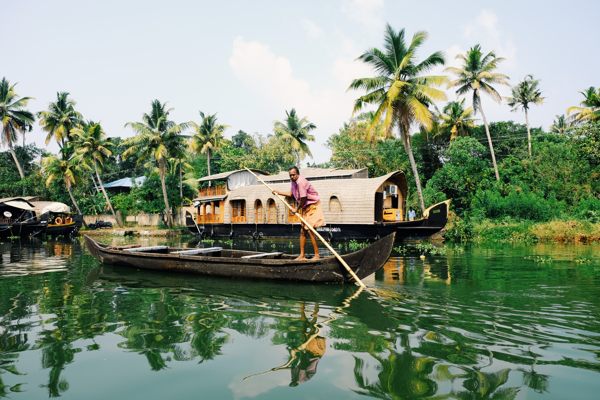

Explore India: A Journey through Enchanting Tourism Destinations
Welcome to our blog post dedicated to exploring the rich and diverse tourism destinations of India!
India, with its vibrant culture, historical heritage, and breathtaking landscapes, is a traveler's paradise. From the snow-capped peaks of the Himalayas to the sandy shores of the Indian Ocean, this incredible country offers a myriad of experiences for all kinds of travelers.
If you're planning a trip to India or simply want to immerse yourself in the wonders of this incredible nation, join us on a virtual journey as we explore some of the top tourism destinations:
1. The Majestic Taj Mahal:

No visit to India is complete without witnessing the awe-inspiring beauty of the Taj Mahal in Agra. This UNESCO World Heritage site is a testament to eternal love and architectural brilliance. As you stand before its marble facade, adorned with intricate carvings and reflecting pools, you'll be captivated by its grandeur and the romantic tale behind its creation. The Taj Mahal is a masterpiece of Mughal architecture and attracts millions of visitors from around the world.
2. Serene Backwaters of Kerala:

Escape to the tranquil backwaters of Kerala, where picturesque lagoons, canals, and palm-fringed lakes create a serene and enchanting landscape. Embark on a houseboat cruise through these waterways, allowing yourself to unwind amidst the beauty of nature. As you glide along, you'll witness local life, spot exotic bird species, and indulge in delicious Kerala cuisine. The backwaters of Kerala offer a peaceful and rejuvenating experience for nature lovers and those seeking relaxation.
3. Spiritual Varanasi on the Banks of Ganges:
Immerse yourself in the spiritual aura of Varanasi, one of the oldest living cities in the world. Located on the banks of the sacred Ganges River, Varanasi is a hub of spirituality, rituals, and ancient traditions. Take a boat ride along the river during sunrise or sunset to witness mesmerizing rituals, visit historic temples, and explore the narrow lanes filled with vibrant markets. Varanasi is a deeply spiritual destination that offers a unique insight into the religious and cultural fabric of India.
4. Majestic Landscapes of Ladakh:
For those seeking adventure and breathtaking landscapes, Ladakh is a must-visit destination. Nestled in the Himalayas, Ladakh offers stunning views of rugged mountains, high-altitude passes, and pristine lakes. Experience the thrill of exploring ancient monasteries, embarking on treks through picturesque valleys, and encountering the warm hospitality of the Ladakhi people. Ladakh is a paradise for adventure enthusiasts and nature lovers, with its unique blend of stunning natural beauty and rich cultural heritage.
5. Bustling Streets of Mumbai:
Discover the vibrant and bustling city of Mumbai, often referred to as the "City of Dreams." This cosmopolitan metropolis is the heart of India's film industry and offers a unique blend of cultures, cuisines, and architectural marvels. From the iconic Gateway of India to the lively markets of Colaba, Mumbai is a city that never sleeps. Explore the historical sites, indulge in street food, and experience the energetic vibe of this dynamic city. Mumbai showcases the modern face of India while retaining its rich heritage.
Conclusion:
India's tourism destinations are as diverse as the country itself, offering a kaleidoscope of experiences for every traveler. Whether you're seeking cultural immersion, spiritual enlightenment, or adventure in the great outdoors, India has it all. Each destination mentioned in this article has its own unique charm and attractions, providing a glimpse into India's rich history, natural beauty, and vibrant culture.
As you plan your trip to India or dream about future adventures, keep these incredible destinations in mind. They offer a perfect blend of history, spirituality, nature, and urban experiences. So pack your bags, prepare your camera, and get ready to embark on an unforgettable journey through India's enchanting tourism destinations!